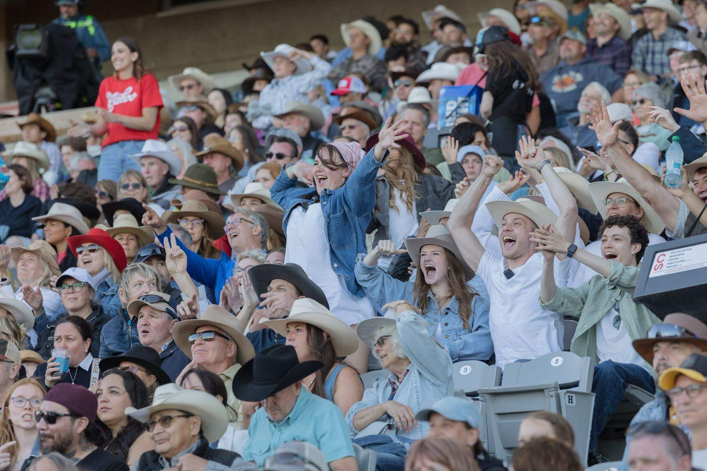

Festivals · Culture
Calgary Stampede 2027
- Dates
- –
- Venue
- Stampede Park
- Location
- Calgary, Canada
- Format
- In-person
- Category
- Culture
- Industry
- Culture / western heritage
- Organiser
- Calgary Stampede
- Expected attendance
- 1,411,954
- Official website
- https://www.calgarystampede.com/
About
Included as a cultural festival (western heritage, Elbow River Camp/Indigenous programming, concerts and exhibition); it also includes a rodeo. Canadian dates are local to the host city.
Topics: western heritage, Indigenous culture, concerts, exhibition, rodeo.
Calgary Stampede's final 2026 attendance release (1,411,954 guests over 10 days), as reported by the Calgary Herald quoting the organiser; no organiser-page copy was fetchable on 24 Nov 2026.